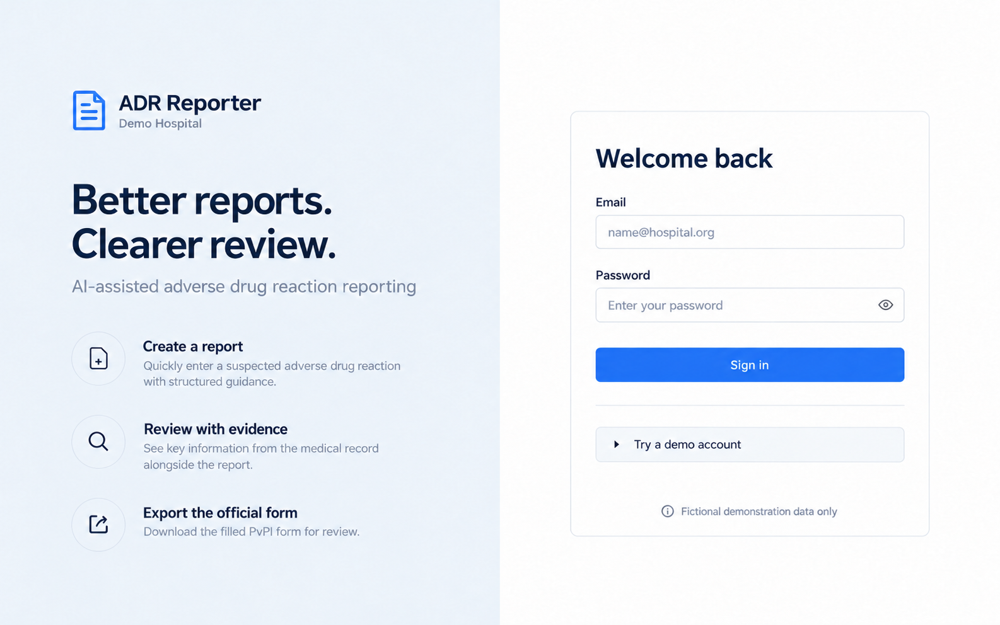

19 proposed screens covering the reporting journey, institutional review, urgent escalation, submission tracking and account pages. Select any picture to open it at full size.
Concept images · fictional sample data · application UI not changed